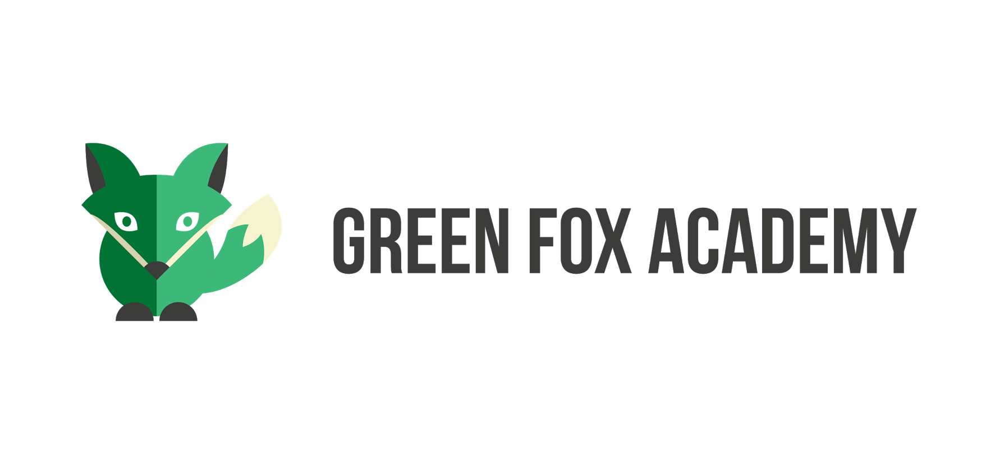

An open minded person who is ready to take new challanges, to go over obstacles and to fight for goals. Personal advantages are the following:
- High motivation to gain and learn new knowledges;
- Proactive personality;
- Positive attitude;
- Experience in multicultural environment;
“Life isn't about finding yourself. Life is about creating yourself.” -George Bernard Shaw
Notable achievments
-
Part of the local Students Government at Pázmány Péter Catholic University VJK (HÖK)
For more then a year I took the responsibility of the vice-president at the committee of sport's and culture.
-
ERASMUS Scholarship to Denmark
I have finished a succesfull semester at VIA University College in Aarhus, Denmark;
During the semester I had opportunity to learn Entrepenourship, Psychology and Pedagogy;
Education and training
Pogány Frigyes Bilingual Technical School and Gymnasium, Budapest (Hungary)
German billingual education
- Acquired C1 Complex German Language Proficiency;
Pázmány Péter Catholic University - BTK-VJTK, Esztergom (Hungary)
English Faculty Primary School-teacher
- Experience gained in teaching English and general subjects troughout practice;
- Acquired C1 Complex English Language Proficiency
Greenfox Academy, Budapest (Hungary)
Junior WebDeveloper
- Still in progress; established finish time in March.
“Do what you can, with what you have, where you are.” -Theodore Roosevelt
Personal interest and hobbies
- Making short trips in the nature
- Reading books and articles
- Hang out with friends
